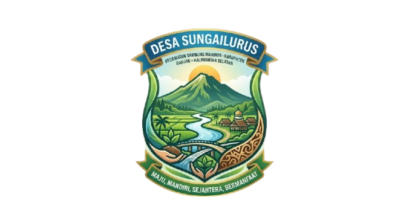
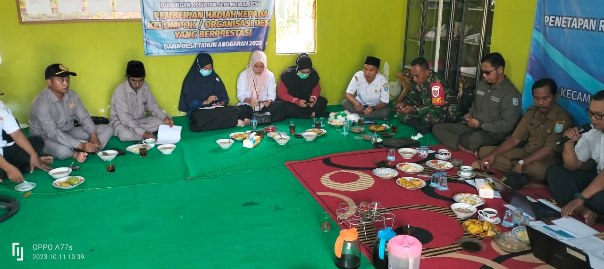

Selamat Datang di Website Resmi
Desa Sungai Lurus
Kecamatan Sambung Makmur, Kabupaten Banjar, Provinsi Kalimantan Selatan


Selamat Datang di Website Resmi
Kecamatan Sambung Makmur, Kabupaten Banjar, Provinsi Kalimantan Selatan
Mewujudkan tata kelola desa yang transparan, mandiri, dan berbudaya berbasis kearifan lokal.
Desa Sungai Lurus secara administratif terletak di wilayah Kecamatan Sambung Makmur, Kabupaten Banjar, Provinsi Kalimantan Selatan. Desa ini dikenal dengan potensi alamnya yang melimpah, suasana pedesaan yang asri, serta adat gotong royong warga yang masih sangat kental.
Pemerintah desa berkomitmen meningkatkan kualitas hidup warga melalui optimalisasi sektor pertanian, pendampingan kelompok Usaha Mikro Kecil dan Menengah (UMKM), serta penyediaan akses pelayanan publik yang merata dan prima.


Sinergi dinas terkait dalam menghadirkan pasar murah bagi warga guna mendukung perekonomian lokal.
Pusat kegiatan keagamaan Safari Ramadhan dihadiri langsung oleh Bupati beserta jajaran Forkopimcam.
Tim Penggerak PKK mengadakan pelatihan kreatif guna meningkatkan keterampilan ekonomi kreatif keluarga.

Pemerintah Desa menyelaraskan prioritas pembangunan sarana infrastruktur irigasi.

Pelayanan kesehatan gratis berkala guna mencegah stunting dan menjaga kebugaran lansia.
Jumlah Penduduk
Jumlah Kepala Keluarga (KK)
Jumlah Laki-laki
Jumlah Perempuan
Kelahiran (30 Hari Terakhir)
Kematian (30 Hari Terakhir)
Total Warga Asli
Total Pendatang
Klik pada kartu aparat untuk melihat biodata lengkap beserta foto.

Kepala Desa

Sekretaris Desa

Bendahara Desa

Kasi Pemerintahan
Ketua RT 01
Ketua RT 02
Ketua RT 03
Klik pada kartu potensi untuk melihat galeri foto dokumentasi lengkap beserta keterangan program.

Melalui program pembibitan mandiri dan pengelolaan irigasi tersier, Desa Sungai Lurus terus mendorong kemandirian pangan khususnya di sektor pertanian padi, jagung, serta sayuran hortikultura.

Mengoptimalkan bahan serat alam sekitar, kelompok Pemberdayaan Kesejahteraan Keluarga (PKK) memproduksi aneka tas anyaman unik, taplak meja, serta suvenir bernilai ekonomis tinggi.
Konon penamaan Desa Sungai Lurus bersumber dari keberadaan sebuah sungai alami di daerah tersebut yang mengalir secara lurus membelah kawasan pemukiman awal warga setempat. Aliran airnya yang lurus tanpa banyak kelokan menjadi jalur transportasi air utama bagi leluhur kami terdahulu.
Sejak berpuluh tahun lalu, desa ini bertransformasi dari daerah pedalaman rimbun hingga menjadi kawasan pemukiman tertata di bawah naungan Kecamatan Sambung Makmur, Kabupaten Banjar.
Klik salah satu dokumen di bawah ini untuk membuka lembar arsip dokumentasi lebih lengkap.


Diberikan oleh Dinas Kesehatan Kabupaten Banjar atas keberhasilan penanganan tumbuh kembang anak.
Penghargaan dalam tingkat Kecamatan Sambung Makmur dalam agenda promosi UMKM lokal.
Penghargaan atas ketaatan memublikasikan Laporan Realisasi APBDesa melalui media terbuka.
Estimasi Pelaksanaan: Juli 2026 | Sektor: Infrastruktur Pertanian
Estimasi Pelaksanaan: Agustus 2026 | Sektor: Pengembangan Ekonomi
Estimasi Pelaksanaan: September 2026 | Sektor: Kesehatan Warga

Telah terlaksana dengan antusiasme tinggi dari warga guna pemenuhan bahan pokok terjangkau.

Penyaluran dana bansos tepat sasaran dibarengi agenda kerja bakti pembersihan aliran air lingkungan.
Guna mempermudah penampungan saran, aspirasi, serta laporan dari masyarakat secara cepat dan transparan, silakan klik tombol di bawah ini untuk mengisi formulir melalui Google Form resmi Desa Sungai Lurus.
📝 Buka Google Form AspirasiDesa Sungai Lurus terintegrasi langsung dengan sistem navigasi Google Maps. Peta interaktif di bawah dapat digeser dan diperbesar.
| Tempat, Tgl Lahir | : | |
| Umur | : | |
| Agama | : | |
| Pendidikan Terakhir | : |